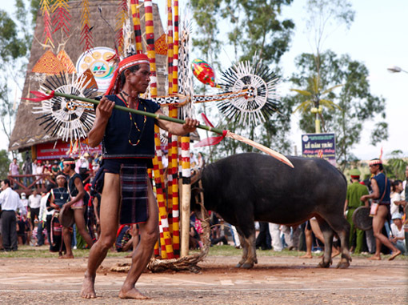
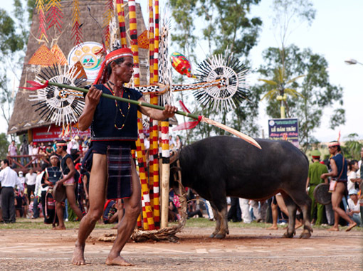
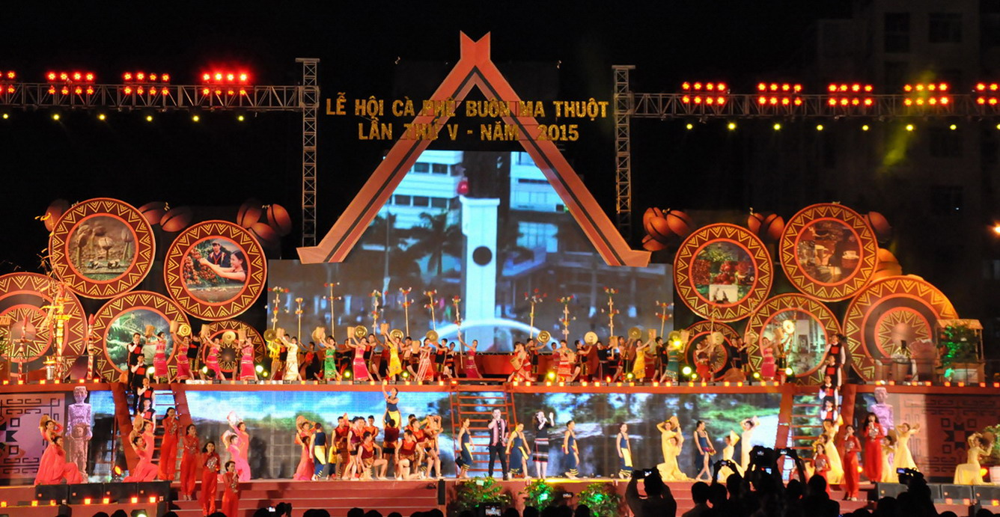

Du lịch Buôn Ma Thuột không chỉ có vẻ đẹp của thiên nhiên hùng vĩ mà còn rất nhiều lễ hội độc đáo để bạn khám phá. Khi trải nghiệm Top lễ hội DakLak phổ biến, bạn sẽ có cơ hội hiểu hơn về văn hóa, đời sống cũng như lịch sử riêng biệt của từng cộng đồng dân tộc đang cùng nhau chung sống tại đây.
Lễ hội Cồng chiêng Tây Nguyên - Lễ hội lớn nhất trong Top lễ hội DakLak phổ biến
Thời gian và địa điểm tổ chức lễ hội Cồng Chiêng tại Đắk Lắk
Lễ hội cồng chiêng Tây Nguyên được tổ chức trong khoảng thời gian từ tháng 3 đến hết tháng 12 hàng năm. Lễ hội luân phiên được tổ chức lần lượt tại 5 tỉnh Tây Nguyên là Đắk Lắk, Lâm Đồng, Kon Tum, Đắk Nông và Gia Lai. Vì thế cứ 5 năm một lần, người dân Đắk Lắk lại được hòa mình trong không khí tưng bừng, rộn ràng của lễ hội này.

Lễ hội cồng chiêng Tây Nguyên được tổ chức với không khí tưng bừng, rộn ràng suốt nhiều tháng
Giá trị văn hóa của Top lễ hội DakLak phổ biến - Lễ hội Cồng Chiêng Tây Nguyên
Nhắc đến văn hóa Tây Nguyên, điều đầu tiên mà chúng ta nhớ đến chính là không gian văn hóa Cồng chiêng đặc sắc. Đây được coi là giá trị truyền thống đại diện cho tất cả các dân tộc đang sinh sống tại Tây Nguyên nói chung và Đắk Lắk nói riêng. Lễ hội này đã được UNESCO công nhận là Kiệt tác truyền khẩu và phi vật thể nhân loại vào ngày 25/11/2005, trở thành niềm tự hào của Tây Nguyên nói riêng và Việt Nam nói chung.
Trong những năm Đắk Lắk tổ chức lễ hội Cồng chiêng Tây Nguyên, tất cả các nghệ nhân sẽ quy tụ về đây để biểu diễn các tiết mục hấp dẫn. Cồng chiêng là loại hình nghệ thuật diễn xướng tập thể, mỗi dân tộc sẽ có những bài khác nhau, tạo nên sự đa dạng và độc đáo, hấp dẫn các khách du lịch gần xa đổ về trải nghiệm và khám phá.
Những tiết mục được biểu diễn trong lễ hội Cồng chiêng phản ánh văn hóa, đời sống cũng như khát khao và ước vọng của đồng bào Tây Nguyên. Nét văn hóa này cho đến thời điểm hiện tại vẫn đang tiếp tục được gìn giữ và phát huy, để các thế hệ mai sau tiếp nối.
Lễ hội Đua voi
Lễ hội Đua voi được tổ chức định kỳ hai năm một lần vào tháng 3 dương lịch, là một trong những lễ hội được mong chờ nhất tại Đắk Lắk. Lễ hội được tổ chức tại huyện Buôn Đôn vì đây là cái nôi của nghề săn bắt và thuần dưỡng voi rừng.


Top lễ hội DakLak phổ biến không thể nào không nhắc đến lễ Đua voi - Thể hiện sự tài tình của người dân Buôn Đôn khi huấn luyện những chú voi vừa thông minh vừa khỏe mạnh
Lễ hội đua voi Buôn Đôn là nơi tập hợp những chú voi khỏe mạnh và to lớn. Sân đua được thiết kế là bãi đất trống với chiều dài khoảng 500 mét, đủ cho khoảng 30 chú voi cùng tham gia đua. Các chú voi sẽ được điều khiển để đứng ngay ngắn tại vạch xuất phát, khi hiệu lệnh tù và vang lên thì đàn voi sẽ đồng loạt chạy về đích. Không khí của Top lễ hội DakLak phổ biến này rất rộn ràng bởi âm thanh của hàng chục chú voi chạy đua, tiếng cồng chiêng và tiếng hò reo cổ vũ tưng bừng từ khán giả.
Đua voi không chỉ có hình thức thi chạy đua mà còn có thi kéo cây, thi ném gỗ, bơi vượt sông v.v. Các chú voi được người dân huấn luyện tài tình nên ngoài thân hình to lớn chúng còn rất khéo léo và thông minh. Chú voi giành được chiến thắng trong cuộc thi sẽ nhận được rất nhiều đồ ăn ngon còn chủ nhân thì nhận được phần thưởng rất có giá trị.
Lễ hội đâm trâu
Lễ hội Đâm trâu còn có tên gọi khác là Koh Kpo hoặc Groong Kpo Tonơi, được người Bahnar tổ chức định kỳ hàng năm từ tháng 1 đến tháng 3 âm lịch. Tuy đây chỉ là lễ hội của một dân tộc nhưng luôn nằm trong Top lễ hội DakLak phổ biến để chào đón năm mới, là dịp người dân cùng nhau cầu sức khỏe và năm mới mùa màng bội thu, lúa thóc đầy bồ.
Lễ hội sẽ được tổ chức tại nhà rông, người dân trong bản ăn mặc thật đẹp để cùng nhau tham gia. Trong thời gian diễn ra lễ hội, những con trâu khỏe mạnh nhất sẽ được tuyển chọn để cột thật chắc ngoài sân. Trên người chúng trang trí bằng tre nứa, những tấm vải dệt và các chùm ống chiên gió.
 

Lễ hội Đâm trâu mang giá trị văn hóa lâu đời, tuy nhiên cũng vấp phải một số tranh cãi nhất định
Già làng sẽ là người đại diện cúng tế, sau khi lễ xong thì trai tráng trong làng đầu chít khăn đỏ, tay cầm gươm xếp thành vòng tròn rồi cùng nhau đâm trâu. Xung quanh dân làng sẽ đánh cồng và hò reo cổ vũ nhiệt tình. Trâu sau khi chết sẽ được mang đi xẻ thịt và chia cho các gia đình trong buôn làng.
Lễ hội đâm trâu Buôn Ma Thuột là Top lễ hội DakLak phổ biến, mang giá trị văn hóa truyền thống lâu đời của cộng đồng người dân tộc Bahnar. Tuy nhiên, lễ hội này cũng gặp những tranh cãi và phản đối nhất định do tập tục gây ảnh hưởng đến động vật.
Lễ cúng lúa trổ bông
Từ tháng 9 tới tháng 11 là lúc lúa trổ bông cũng đồng thời là thời điểm người Đắk Lắk làm lễ cúng lúa. Cả cánh đồng đến thì ngậm đòng đòng, mùi thơm dịu ngọt của lúa non khiến bạn ngất ngây. Lễ cúng lúa trổ bông gửi gắm ước muốn của người dân mong cầu thần linh phù hộ để lúa trổ đều bông, hạt chắc mẩy, mùa màng bội thu.
Đây là Top lễ hội DakLak phổ biến vì năm nào cũng được người dân tổ chức, không phân biệt dân tộc. Lễ vật cúng được chuẩn bị khá đơn giản, bao gồm ché rượu cần, con gà luộc, heo quay và dựng cây nêu ở nhà trưởng làng. Sau khi bày xong lễ vật, thầy cúng sẽ làm lễ còn dân làng ngồi phía sau vái lạy. Cây nêu có ngụ ý để thần linh về ngự trên cây và giúp cho mùa lúa được tốt tươi.
Lễ mừng lúa mới

Nếu đã từng xem những bộ phim về cuộc sống của người dân vùng cao thì bạn chắc chắn sẽ thấy Lễ mừng lúa mới được tổ chức sau khi thu hoạch mùa màng xong. Lễ hội này đại diện cho văn hóa và tín ngưỡng của người dân tại đây, là sự biết ơn mà họ gửi đến thần linh vì đã phù hộ cho mưa thuận gió hòa, mùa màng bội thu.
Lễ mừng lúa mới nằm trong Top lễ hội DakLak phổ biến và được người dân mong chờ nhất. Bởi vì không khí lễ hội được tổ chức rất tươi vui, đây là dịp để tất cả mọi người trong bản quây quần bên nhau ăn uống, hát hò, đánh cồng chiêng, nhảy nhót bên những đống lửa rực cháy.
Lễ bỏ mả
Theo quan niệm của người dân Tây Nguyên, mỗi người sau khi qua đời linh hồn sẽ phải trải qua 7 lần thử thách nữa mới có thể được biến thành một giọt sương và đầu thai trở lại kiếp người. Vì thế, sau khi người thân mất, những gia đình tại Đắk Lắk sẽ tổ chức xây mồ mả cẩn thận, đặt các bức tượng gỗ bao quanh nhà mồ.

Lễ bỏ mả với mong cầu người đã khuất sớm được đầu thai, đến kiếp sau làm người hạnh phúc
Nếu có dịp đến du lịch Buôn Ma Thuột và gặp đám tang cùng lễ bỏ mả thì bạn có thể ngỏ lời với gia đình người đã khuất để được tham gia tìm hiểu về các tập tục của họ. Lễ hội được thực hiện ngoài nghĩa địa, có bàn cúng để cầu nguyện cho người mất sớm được luân hồi chuyển kiếp.
Lễ cúng bến nước
Cuối cùng trong Top lễ hội DakLak phổ biến là Lễ cúng bến nước Buôn Ma Thuột. Lễ hội cũng được tổ chức vào thời điểm sau khi thu hoạch xong để tạ ơn thần linh đã giúp mưa thuận gió hòa, đủ nước tưới tiêu để người dân có được mùa màng bội thu. Nghi thức lễ cúng tổ chức khá đơn giản, chủ yếu là lòng thành kính của người dân, sau khi cúng lễ xong thì cả bản sẽ cùng nhau ăn uống và vui chơi.
Lễ hội cà phê Buôn Ma Thuột
Cà phê là cây trồng chủ đạo của nền nông nghiệp Tây Nguyên nói chung và tỉnh Đắk Lắk nói riêng vì vậy không có gì lạ khi ở đây tổ chức hội cà phê nằm tôn vinh loại cây trồng đã giúp đời sống của bà con Đắk Lắk trở nên khấm khá hơn.
Đây là lễ hội mang tầm vóc quốc gia được tổ chức 2 năm một lần tại thành phố Buôn Mê Thuột - trung tâm văn hóa chính trị của tỉnh Đắk Lắk. Lễ hội chỉ mới bắt đầu vào năm 2005 nhưng đã trở thành nét đẹp văn hóa không thể thiếu của người dân Tây Nguyên.
Lễ hội sầu riêng
Nhằm quảng bá hình ảnh quê hương, tiềm năng lợi thế của huyện Krông Pắc đến với du khách trong và ngoài tỉnh, đặc biệt là giới thiệu về sản phẩm nông nghiệp thế mạnh của địa phương là sầu riêng. Ủy ban nhân dân huyện Krông Pắc tổ chức “Lễ hội Sầu riêng Krông Pắc” lần thứ nhất vaò năm 2022 tại huyện nhà. Lễ hội được tổ chức 2 năm một lần với mục đích quảng bá trái sầu riêng tới bạn bè trong nước và quốc tế.
Lễ hội sẽ tạo không khí vui tươi, phấn khởi cho người địa phương; thu hút đông đảo du khách khắp mọi miền đất nước đến tham gia; tôn vinh những người nông dân làm ra sản phẩm nổi tiếng sầu riêng Krông Pắc, thu hút kêu gọi các nhà đầu tư vào chế biến sâu nông sản nói chung và sầu riêng nói riêng… . Cũng thông qua lễ hội mà từng bước xây dựng các sản phẩm du lịch gắn với nông nghiệp, đặc biệt là gắn với sầu riêng Krông Pắc.

Lễ hội sầu riêng lần thứ I(2022) tổ chức tại Quảng trường hồ Tân An


Và vào cuối tháng 8 đầu tháng 9 năm nay, lễ hội sầu riêng lần thứ 2 sẽ được tổ chức tại thị trấn Phước An-Đăk Lăk
Lễ hội có 12 chuỗi hoạt động, gồm: hội thi nông dân sản xuất sầu riêng giỏi; hội chợ giới thiệu sản phẩm OCOP và nông nghiệp tiềm năng của địa phương; ngày hội văn hóa - ẩm thực các dân tộc huyện Krông Pắc (mở rộng); trải nghiệm thưởng thức sầu riêng tại vườn và tham quan cây sầu riêng cổ thụ; hội thảo xây dựng và phát triển hệ sinh thái sầu riêng bền vững; giải chạy việt dã vì sức khỏe cộng đồng; đêm hội DJ và vũ hội ánh sáng giao lưu nghệ thuật giữa các câu lạc bộ đội, nhóm nghệ thuật…
Kính mời quý vị và các bạn đến với Đăk lăk để được trải nghiệm lễ hội và ăn sầu riêng miễn phí tại vườn!!